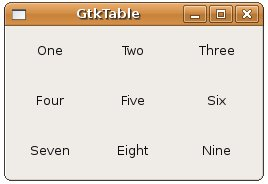

| 在進行元件排版的時候，將元件以類似表格的方式排放也是很常見的排版方式，在GTK中，您可以使用GtkTable，您可以使用gtk_table_new()函式來建立： GtkWidget *table = gtk_table_new(3, 3, TRUE);
上面的程式碼片段也建立3列（row）、3行（column）的表格，第三個參數則設定表格中的空間是否平均分配，所以若設定為TRUE，每一格的空間將取決於置於其中最大的元件。 要將元件置於表格之中，可以使用gtk_table_attach()函式： void gtk_table_attach( GtkTable *table,
GtkWidget *child, guint left_attach, guint right_attach, guint top_attach, guint bottom_attach, GtkAttachOptions xoptions, GtkAttachOptions yoptions, guint xpadding, guint ypadding ); 這個函式中的left_attach、right_attach、top_attach、bottom_attach，決定了元件將佔據的空間，例如若是3X3表格： 0
1 2
3
0+----------+----------+----------+ | | | | 1+----------+----------+----------+ | | | | 2+----------+----------+----------+ | | | | 3+----------+----------+----------+ 若要讓元件佔據左上格空間，則left_attach為0、right_attach為1、top_attach為0、bottom_attach為1，若要讓元件佔據右下格空間，則left_attach為1、right_attach為2、top_attach為1、bottom_attach為2，若要讓元件佔據底下兩格空間，則left_attach為0、right_attach為2、top_attach為1、bottom_attach為2，依此類推。 xoptions與yoptions為元件佔據空間的方式，可以指定以下的值，可以使用OR結合值：
您可以使用gtk_table_attach_defaults()函式，預設選項為GTK_FILL | GTK_EXPAND，padding都設為0： void gtk_table_attach_defaults( GtkTable *table,
GtkWidget *widget, guint left_attach, guint right_attach, guint top_attach, guint bottom_attach ); 下面的程式先示範簡單的GtkTable使用方式：
#include <gtk/gtk.h> 程式執行時的參考畫面如下：  GtkTable的left_attach、right_attach、top_attach、bottom_attach指定方式，可以讓您方便的達到元件跨數格的方式，在Table Packing Example中有個例子，您也可以再參考 Packing Using Tables 中有關GtkTable的說明。 |